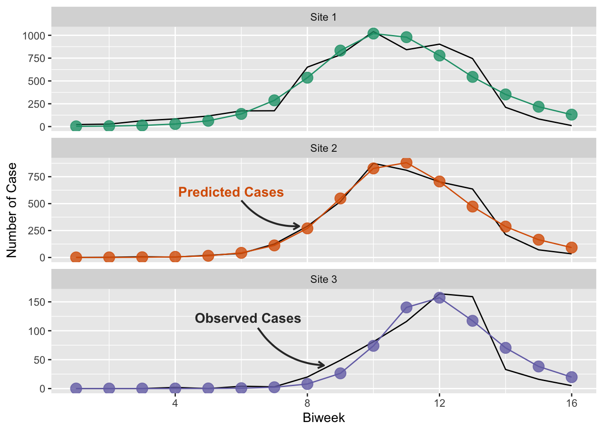

9 R Session 03
Estimation
![]()
Materials adapted from John Drake and Pej Rohani
9.1 Setup
Code
9.2 Estimating \(R_0\) Problem Background
So far in this class we have focused on the theory of infectious disease. Often, however, we will want to apply this theory to particular situations. One of the key applied problems in epidemic modeling is the estimation of \(R_0\) from outbreak data. In this session, we study two methods for estimating \(R_0\) from an epidemic curve. As a running example, we will use the data on influenza in a British boarding school.
Code
ggplot(flu, aes(x = day, y = flu)) +
geom_line(color = "slategray4") +
geom_point(shape = 21, size = 5, fill = "slategray4", alpha = 0.8) +
labs(x = "Day", y = "Active Influenza Cases")
9.3 Estimating \(R_0\) From The Final Outbreak Size
Our first approach is to estimate \(R_0\) from the final outbreak size. Although unhelpful at the early stages of an epidemic (before the final epidemic size is observed), this method is nonetheless a useful tool for post hoc analysis. The method is general and can be motivated by the argument listed in (Keeling and Rohani 2008):
First, we assume that the epidemic is started by a single infectious individual in a completely susceptible population. On average, this individual infects \(R_0\) others. The probability a particular individual escaped infection is therefore \(e^{-R_0 / N}\).
If \(Z\) individuals have been infected, the probability of an individual escaping infection from all potential sources is \(e^{-Z R_0 / N}\). It follows that at the end of the epidemic a proportion \(R(\infty) = Z / N\) have been infected and the fraction remaining susceptible is \(S(\infty) = e^{-R(\infty) R_0}\), which is equal to \(2 - R(\infty)\).
\(S(\infty) = e^{-R(\infty) R_0}\) can be calculated by acknowledging that at equilibrium (\(t = \infty\)), \(S(\infty) = 1 - R(\infty) = Z / N\), so substituting \(R(\infty)\) into \(1 - e^{-Z R_0 / N}\) gives the desired result.
It could also be calculated by dividing \(\frac{\dd{S}}{\dd{t}}\) by \(\frac{\dd{R}}{\dd{t}}\):
\[\begin{aligned} \frac{\dd{S}}{\dd{R}} &= - \frac{\beta S}{\gamma} \\ &= - R_0 S \end{aligned}\]which is a separable differential equation, so can be integrated as follows:
\[\begin{aligned} - \int_{0}^{t} \frac{1}{R_0 S} \dd{S} &= \int_{0}^{t} \dd{R} \\ - \frac{1}{R_0} \left(\ln{S(t)} - \ln{S(0)} \right) &= R(t) - \cancelto{0}{R(0)} \\ \ln{S(t)} &= \ln{S(0)} - R_0 R(t) \\ S(t) &= S(0) e^{-R_0 R(t)} \end{aligned}\]Putting this together, we get:
\[ 1 - R(\infty) - e^{-R(\infty) R_0} = 0 \]
Rearranging, we have the estimator
\[ \hat{R_0} = \frac{\ln(1 - Z / N)}{-Z / N}, \]
which, in this case, evaluates to \(\frac{\ln(1 - 512 / 764)}{-512 / 764} = 1.655\).
9.3.1 Exercise 1
This equation shows the important one-to-one relationship between \(R_0\) and the final epidemic size. Plot the relationship between the total epidemic size and \(R_0\) for the complete range of values between 0 and 1.
9.4 Linear Approximation
The next method we introduce takes advantage of the fact that during the early stages of an outbreak, the number of infected individuals is given approximately as \(I(t) \approx I_0 e^{((R_0 - 1)(\gamma + \mu)t)}\). Taking logarithms of both sides, we have \(\ln(I(t)) \approx \ln(I_0) + (R_0 - 1)(\gamma + \mu)t\), showing that the log of the number of infected individuals is approximately linear in time with a slope that reflects both \(R_0\) and the recovery rate.
This suggests that a simple linear regression fit to the first several data points on a log-scale, corrected to account for \(\gamma\) and \(\mu\), provides a rough and ready estimate of \(R_0\). For flu, we can assume \(\mu =0\) because the epidemic occurred over a time period during which natural mortality is negligible. Further, assuming an infectious period of about 2.5 days, we use \(\gamma = (2.5)^{-1} = 0.4\) for the correction. Fitting to the first four data points, we obtain the slope as follows.
Code
Call:
lm(formula = log(flu[1:4]) ~ day[1:4], data = flu)
Residuals:
1 2 3 4
0.03073 -0.08335 0.07450 -0.02188
Coefficients:
Estimate Std. Error t value Pr(>|t|)
(Intercept) -0.02703 0.10218 -0.265 0.81611
day[1:4] 1.09491 0.03731 29.346 0.00116 **
---
Signif. codes: 0 '***' 0.001 '**' 0.01 '*' 0.05 '.' 0.1 ' ' 1
Residual standard error: 0.08343 on 2 degrees of freedom
Multiple R-squared: 0.9977, Adjusted R-squared: 0.9965
F-statistic: 861.2 on 1 and 2 DF, p-value: 0.001159Code
# Extract slope parameter
slope <- coef(linear_model)[2]
slopeday[1:4]
1.094913 Rearranging the linear equation above and denoting the slope coefficient by \(\hat \beta_1\) we have the estimator \(\hat R_0 = \hat \beta_1 / \gamma + 1\) giving \(\hat R_0 = 1.094913 / 0.4 + 1 \approx 3.7\).
9.4.1 Exercise 2
Our estimate assumes that boys remained infectious during the natural course of infection. The original report on this epidemic indicates that boys found to have symptoms were immediately confined to bed in the infirmary. The report also indicates that only 1 out of 130 adults at the school exhibited any symptoms. It is reasonable, then, to suppose that transmission in each case ceased once he had been admitted to the infirmary. Supposing admission happened within 24 hours of the onset of symptoms. How does this affect our estimate of \(R_0\)? Twelve hours?
9.4.2 Exercise 3
Biweekly data for outbreaks of measles in three communities in Niamey, Niger are provided in the dataframe niamey. Use this method to obtain estimates of \(R_0\) for measles from the first community assuming that the infectious period is approximately two weeks or \(14/365 \approx 0.0384\) years.
9.4.3 Exercise 4
A defect with this method is that it uses only a small fraction of the information that might be available, i.e., the first few data points. Indeed, there is nothing in the method that tells one how many data points to use–this is a matter of judgment. Further, there is a tradeoff in that as more and more data points are used the precision of the estimate increases, but this comes at a cost of additional bias. Plot the estimate of \(R_0\) obtained from \(n=3, 4, 5, ...\) data points against the standard error of the slope from the regression analysis to show this tradeoff.
9.5 Estimating dynamical parameters with least squares
The objective of the previous exercise was to estimate \(R_0\). Knowing \(R_0\) is critical to understanding the dynamics of any epidemic system. It is, however, a composite quantity and is not sufficient to completely describe the epidemic trajectory. For this, we require estimates for all parameters of the model. In this exercise, we introduce a simple approach to model estimation called least squares fitting, sometimes called trajectory matching. The basic idea is that we find the values of the model parameters that minimize the squared differences between model predictions and the observed data. To demonstrate least squares fitting, we consider an outbreak of measles in Niamey, Niger, reported on by (Grais et al. 2006).
Code
# Replace an "NA"
niamey[5, 3] <- 0
niamey_df <- niamey %>%
rename_with(., ~paste0("Site_", str_remove(.x, "V"))) %>%
mutate(biweek = 1:16) %>%
pivot_longer(cols = contains("Site"), names_to = "site", values_to = "cases")Code
niamey_site_colors <- RColorBrewer::brewer.pal(3, "Dark2")
names(niamey_site_colors) <- unique(niamey_df$site)
niamey_site_labels <- str_replace_all(names(niamey_site_colors), "_", " ")
names(niamey_site_labels) <- names(niamey_site_colors)Code
ggplot(niamey_df, aes(x = biweek, y = cases, color = site, fill = site, group = site)) +
geom_line() +
geom_point(shape = 21, size = 5, alpha = 0.8) +
scale_color_manual(values = niamey_site_colors, aesthetics = c("color", "fill"), labels = niamey_site_labels) +
guides(color = "none") +
labs(x = "Biweek", y = "Number of Cases", fill = "Site Number") +
theme(legend.position = "bottom")
9.6 Dynamical Model
First, we write a specialized function for simulating the SIR model in a case where the removal rate is “hard-wired” and with no demography.
9.7 Objective function
Now we set up a function that will calculate the sum of the squared differences between the observations and the model at any parameterization (more commonly known as “sum of squared errors”). In general, this is called the objective function because it is the quantity that optimization seeks to minimize.
Code
# Function to calculate squared errors
sse_sir <- function(p, data){
# Convert biweekly time series into annual time scale
t <- data$biweek * 14 / 365
# Extract the number of actual cases
cases <- data$cases
# Note the parameters are updated throughout the optimization process by the optim() function
# Unpack the transmission parameter and exponentiate to fit on ln scale
beta <- exp(p[["beta"]])
# Unpack the initial states and exponentiate to fit on ln scale
S_init <- exp(p[["S_init"]])
I_init <- exp(p[["I_init"]])
# Fit SIR model to the parameters
sol <- as_tibble(deSolve::ode(
y = c(S = S_init, I = I_init),
times = t,
func = closed_sir_model,
parms = beta,
hmax = 1/120
)) %>%
# Convert to numeric for easier manipulation
mutate(across(everything(), as.numeric))
# Calculate sum of squared errors that is returned to the optim() function
sum((sol$I - cases)^2)
}Notice that the code for sse_sir() makes use of the following modeling trick. We know that \(\beta\), \(S_0\), and \(I_0\) must be positive, but our search to optimize these parameters will be over the entire number line. We could constrain the search using a more sophisticated algorithm, but this might introduce other problems (i.e., stability at the boundaries). Instead, we parameterize our objective function (sse_sir) in terms of some alternative variables \(\ln(\beta)\), \(\ln(S_0)\), and \(\ln(I_0)\). While these numbers range from \(-\infty\) to \(\infty\) (the range of our search) they map to our model parameters on a range from \(0\) to \(\infty\) (the range that is biologically meaningful).
9.8 Optimization
Our final step is to use the function optim to find the values of \(\beta\), \(S_0\), and \(I_0\) that minimize the sum of squared errors as calculated using our function.
Finally, we plot these fits against the data.
Code
# Initial guess
sse_optim_params <- c(beta = -3.2, S_init = 7.3, I_init = -2.6)
# Create a dataframe of optimized parameters
niamey_optims <- niamey_df %>%
# Create a nested dataframe i.e. one row for each site, and the data column now is a
# list column that contains a separate dataframe of times and cases for each site
nest(data = -site) %>%
mutate(
# Map the optim() function call to each of the separate dataframes stored
#in the nested data column we just created
fit = map(data, ~optim(sse_optim_params, sse_sir, data = .x)),
# Map the exp() function to each of the model fits just created, and output
# to a dataframe instead of a list (like in map()), for easier use in
# the plottinge predictions later
map_dfr(fit, ~exp(.x$par))
)Code
niamey_optims %>%
select(-c(data, fit)) %>%
mutate(site = str_replace_all(site, "_", " ")) %>%
gt() %>%
fmt_number(columns = -site, decimals = 3) %>%
fmt_scientific(columns = beta) %>%
# Relabel the column headers
cols_label(
site = md("**Site**"),
beta = md("**Beta**"),
S_init = md("**Initial S**"),
I_init = md("**Initial I**")
) %>%
# Apply style to the table with gray alternating rows
opt_stylize(style = 1, color = 'gray') %>%
# Increate space between columns
opt_horizontal_padding(scale = 3) %>%
cols_align("center")| Site | Beta | Initial S | Initial I |
|---|---|---|---|
| Site 1 | 5.46 × 10−3 | 9,110.385 | 2.332 |
| Site 2 | 8.67 × 10−3 | 6,276.503 | 0.284 |
| Site 3 | 7.13 × 10−2 | 862.579 | 0.001 |
Code
niamey_predictions <- niamey_optims %>%
mutate(
# For each of the different site's nested dataframes, fit the SIR model
# with the optimal parameters to get best fit predictions
predictions = pmap(
.l = list(S_init = S_init, I_init = I_init, beta = beta, time_data = data),
.f = function(S_init, I_init, beta, time_data) {
site_times <- time_data$biweek * 14/365
# Return a dataframe of model solutions
as_tibble(ode(
y = c(S = S_init, I = I_init),
times = site_times,
func = closed_sir_model,
parms = beta,
hmax = 1/120
)) %>%
# Make sure all values are numeric for plotting purposes
mutate(across(everything(), as.numeric))
}
)
) %>%
unnest(c(data, predictions))Code
niamey_preds_labels <- tibble(
site = c("Site_3", "Site_2"),
x_label = c(7, 6.5),
x_arrow_just = c(0.75, -0.5),
x_arrow_end = c(10, 7),
y_label = c(50, 600),
y_arrow_just = c(7, -40),
y_arrow_end = c(90, 150),
commentary = c("**Observed", "**Predicted"),
color = c("grey20", niamey_site_colors["Site_2"])
)
ggplot(niamey_predictions, aes(x = biweek, group = site)) +
# Plot the true cases in black
geom_line(aes(y = cases), color = "black") +
# Plot the best-fit model predictions
geom_line(aes(y = I, color = site)) +
geom_point(aes(y = I, color = site), size = 4, alpha = 0.8) +
scale_color_manual(values = niamey_site_colors, aesthetics = c("color", "fill")) +
# Place each site on it's own subplot and change labels
facet_wrap(~site, ncol = 1, scales = "free_y", labeller = as_labeller(niamey_site_labels)) +
labs(x = "Biweek", y = "Number of Case") +
theme(legend.position = "none") +
ggtext::geom_textbox(
data = niamey_preds_labels,
aes(
label = paste0("<span style = \"color:", color, "\">", commentary," Cases**", "</span>"),
x = x_label, y = y_label
),
size = 4, fill = NA, box.colour = NA
) +
geom_curve(
data = niamey_preds_labels,
aes(x = x_label + x_arrow_just, xend = x_arrow_end, y = y_label + y_arrow_just, yend = y_arrow_end),
size = 1,
arrow = arrow(length = unit(0.3, "cm")),
curvature = list(-0.15),
color = "grey20"
)
9.8.1 Exercise 5
To make things easier, we have assumed the infectious period is known to be 14 days. In terms of years, \(\gamma = (365 / 14)^{-1} \approx 0.0384\). Now, modify the code above to estimate \(\gamma\) and \(\beta\) simultaneously.
9.8.2 Exercise 6
What happens if one or both of the other unknowns (\(S_0\) and \(I_0\)) is fixed instead of \(\gamma\)?